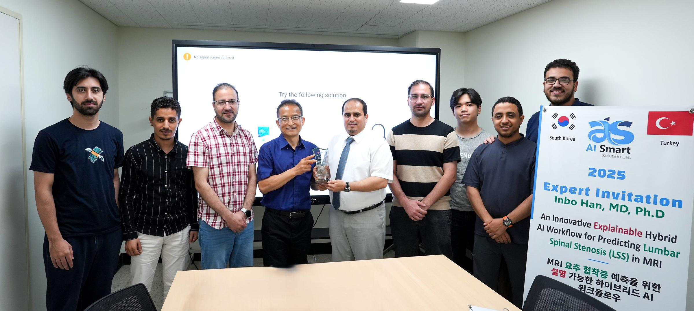

Latest project · Clinical AI
Adaptive Clinical GraphRAG
Hybrid clinical retrieval across MIMIC-IV records and notes using Neo4j, vector search, Text2Cypher, and evidence provenance.
Explore projectAI Researcher
I’m Afnan Habib, a researcher at AISSLab developing multimodal medical AI, vision-language systems, and agentic workflows for clinical imaging.
Research AssistantAISSLab · Sejong University
Research focusMedical imaging · Multimodal learning

01 · Featured research
IEEE Transactions on Medical Imaging · Special Issue · Under Review · 2026
Unified medical AI · Q1 · Top 3%
Med-UniCAD unifies X-ray, CT, MRI, and ultrasound analysis across segmentation, classification, detection, and report generation—then exposes those pathways through an agentic CAD interface.
Mixture of FreqXperts. MoFX decomposes visual features into low-, mid-, and high-frequency components and learns task-, modality-, and content-conditioned cross-frequency interactions.
Under review. Technical details and the full demonstration are temporarily unavailable.
02 · Selected work
One recent clinical retrieval system, followed by research and production work with each project given its own editorial weight.
Latest project · Clinical AI
Hybrid clinical retrieval across MIMIC-IV records and notes using Neo4j, vector search, Text2Cypher, and evidence provenance.
Explore projectAgentic medical AI · Best Paper
Multimodal multi-agent clinical imaging system using MCP and LLM-driven workflows.
MICCAI 2025 · Published
Read publicationIndustry computer vision
Real-time computer-vision system for customer satisfaction and behavioral analytics.
Genesis IT Lab Technologies · 2023
Explore projectRelated research · Under review · 2026
Multimodal medical CAD framework using modality–task conditioned mixture-of-experts.
Explore researchPublished dataset · Medical imaging
Sagittal MRI dataset for segmentation and foraminal stenosis detection.
Scientific Data · 2026 · Published
View dataset paperComputer vision · Awarded system
YOLO-based office object-detection pipeline built in PyTorch.
HumbleBeeAI Hackathon · 2025 · 1st Place
View detailsApplied LLMs · Production system
Natural-language system that generates schema-compliant API requests.
Dcube Technologies · 2023–2024
View detailsMultimodal verification · Production system
Multimodal system for structured post-interview identity review.
Genesis IT Lab Technologies · 2023
View detailsResearch record
MedXpert‑CAD · Agentic AI for Medicine, MICCAI 2025
Med‑GMoE Korean patent · submitted May 2026
M.Sc. Artificial Intelligence · Sejong University
03 · Research focus
I develop generalist medical AI that can interpret multiple imaging modalities and solve multiple clinical tasks.
My work at AISSLab spans computer vision, explainable AI, multimodal learning, clinical language models, retrieval-augmented generation, and agentic systems. I also bring 2.5+ years of industry experience building and deploying computer vision and NLP systems.

04 · Experience
A path from deployed computer-vision systems to generalist medical AI research.
Research Assistant · AISSLab
Unified medical AI, vision-language models, clinical reporting, RAG, agentic AI, and deployment workflows.
M.Sc. Artificial Intelligence · 4.45/4.5
Thesis research on a modality–task conditioned mixture-of-experts framework for multimodal medical CAD.
Machine Learning Developer
Built and deployed an LLM-powered API automation system using OpenAI models, REST APIs, and Docker.
Artificial Intelligence Developer
Developed production systems for real-time visual analytics, identity verification, customer engagement, and conversational automation.
05 · Publications
Paper links are kept close to the work they substantiate. Author highlighting indicates Afnan’s contribution to each record.
Afnan Habib, Mugahed A. Al-Antari, Mukhlis Raza, et al.
Project page temporarily unavailableOsamah F. Abdulmahmod, Hyunwook Kwon, Afnan Habib, Mukhlis Raza, et al.
DOI ↗Mukhlis Raza, Saied Salem, Afnan Habib, et al.
DOI ↗Afnan Habib, Osamah F. Abdulmahmod, Mukhlis Raza, et al.
DOI ↗Saied Salem, Afnan Habib, Mukhlis Raza, et al.
DOI ↗Saied Salem, Afnan Habib, Mukhlis Raza, et al.
DOI ↗Afnan Habib, Mukhlis Raza, Osamah F. Abdulmahmod, et al.
Project ↗06 · Research in practice


Let’s connect